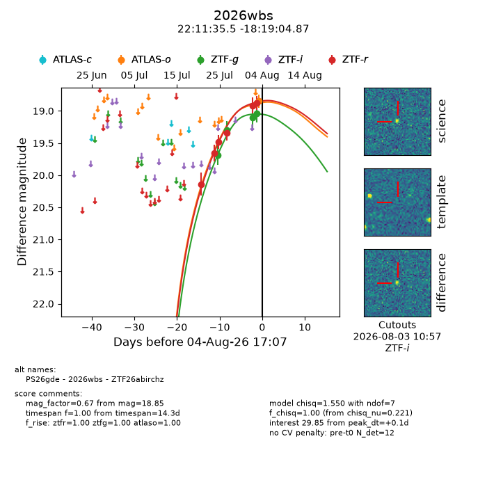
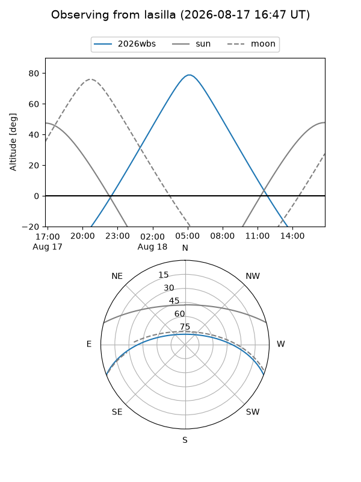
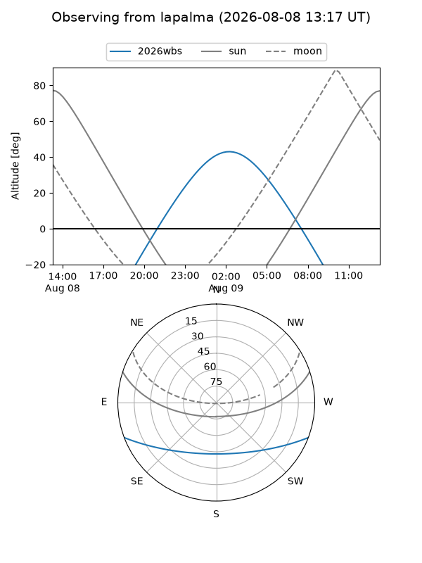
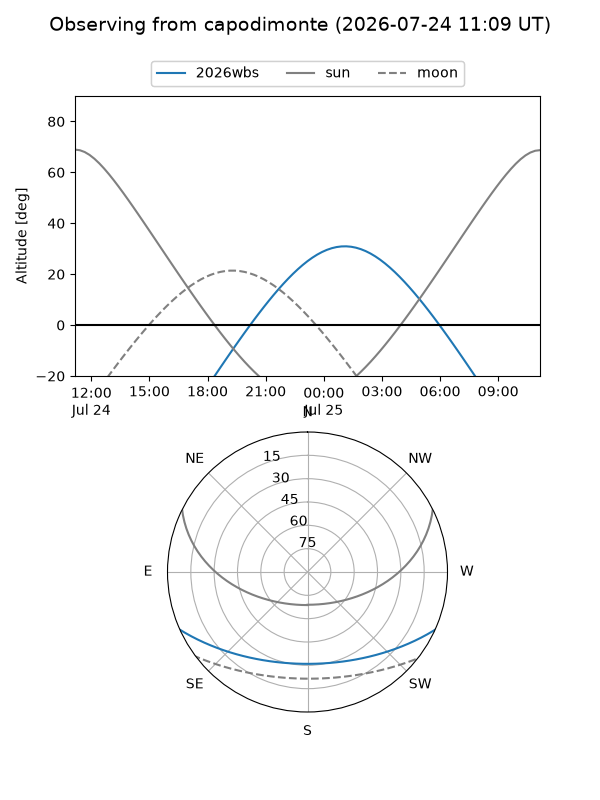
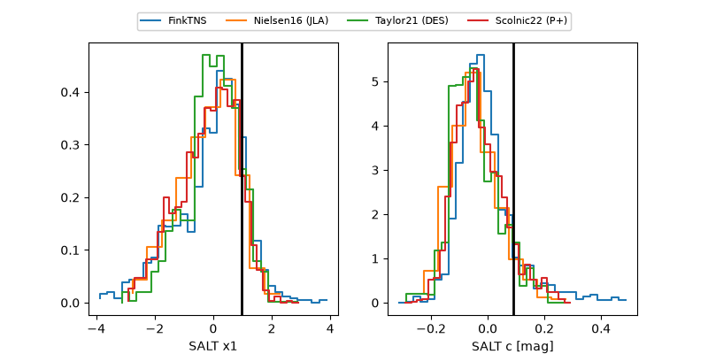

2026wbs
Target 2026wbs at 2026-08-04 17:09
Aliases and brokers:
FINK-ZTF: ztf.fink-portal.org/ZTF26abirchz
Lasair-ZTF: lasair-ztf.lsst.ac.uk/objects/ZTF26abirchz
ALeRCE-ZTF: alerce.online/object/ZTF26abirchz
YSE-PZ: ziggy.ucolick.org/yse/transient_detail/2026wbs
TNS name: wis-tns.org/object/2026wbs
Direct TNS query: direct search
alt names
ZTF26abirchz (ztf,fink_ztf)
2026wbs (tns,yse)
PS26gde (panstarrs)
Coordinates:
equatorial (ra, dec) = 332.8980,-18.31802
equatorial (HMS+DMS) = 22:11:35.53,-18:19:04.87
galactic (l, b) = (37.8136,-52.26968)
Flags:
TNS type: nan
peak dt: +0.1
Photometry:
last atlaso=18.85, ztfg=19.04, ztfr=18.87
2 atlaso, 4 ztfg, 6 ztfr detections
Lightcurve

Visibility



Additional plots
